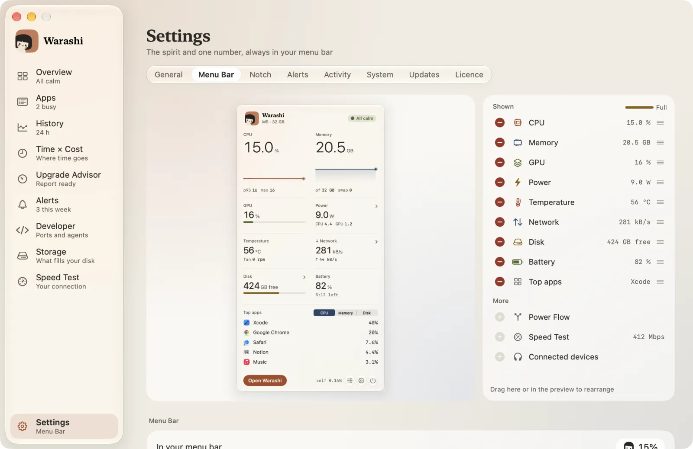
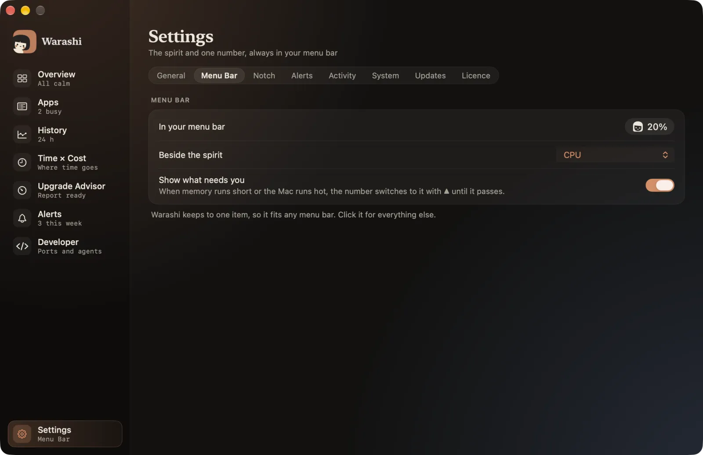
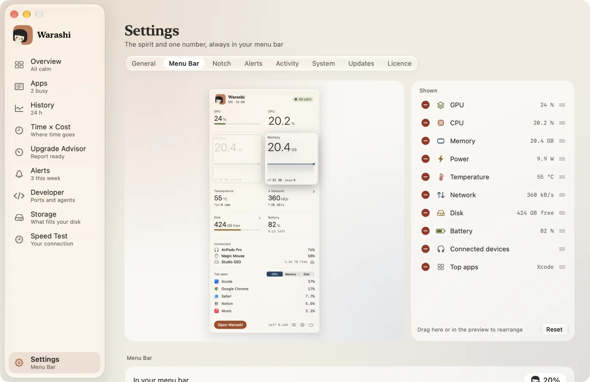
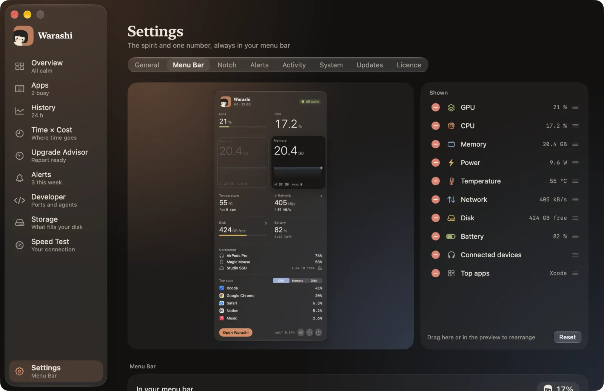
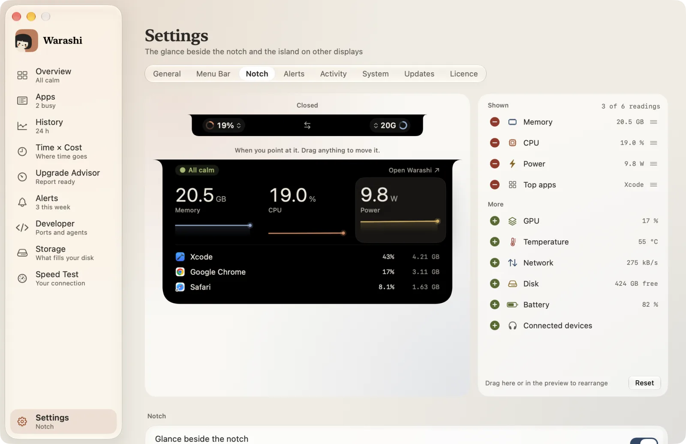
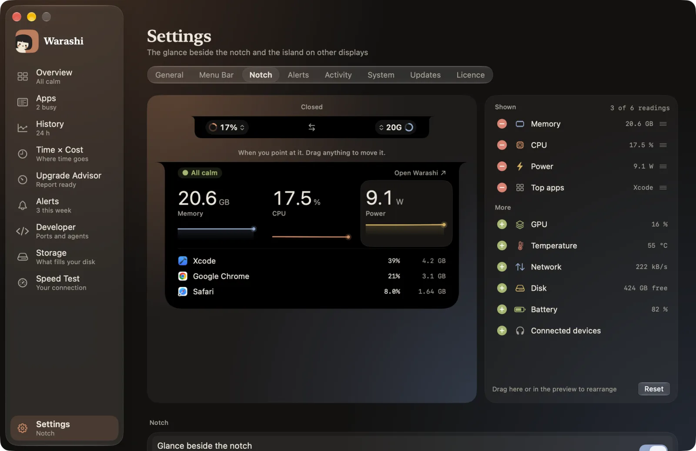

The popover and the open notch are yours to arrange. Both use the same editor: the real thing on the left, live, and your choices on the right. Every change appears straight away, and there's nothing to save.
- Open the editor
For the popover, click the sliders button at the bottom of it, or go to Settings › Menu Bar. For the notch, click the sliders button in the open notch, or go to Settings › Notch.


- Add or remove
Under Shown, press − to take something away. Under More, press + to add it; it joins the end of what's shown. Hidden readings are still recorded in History.
- Drag it where you want it
Point at anything in the preview and pick it up. It lifts under the pointer, a faint outline holds its old place, and everything else slides aside as you move. Let go to put it down. The rows in the list move the same way.


- Do the same for the notch
Settings › Notch shows the notch twice: closed, and as it looks when you point at it. Anything in the open notch can be picked up and moved.


- Change the two numbers beside the notch
Click either number in the closed notch to choose what that side shows. The arrows between them swap the sides.
- Start again
Reset appears once something differs from the default, and puts everything back.
How the notch arranges itself
Both arrange themselves so they always look composed.
The popover
The popover has one maximum size and never scrolls, so it always fits your screen. A small bar above the list shows how full it is. When there's no room, + dims: remove something first. Speed Test, Power Flow and Connected devices start under More, ready to swap in.
CPU and memory have charts, so each stands as tall as two other readings, and short readings fill the space beside them. If only one short reading sits beside a tall one, the tall one drops its chart so there's no empty space.
The open notch
It has room for up to six readings, plus your top apps and connected devices. The list shows how many you've used, and + dims when it's full. Readings always line up evenly, so nothing ends up alone on a row:
| Readings | How they sit |
|---|---|
| 1, 2 or 3 | One row |
| 4 | Two rows of two |
| 5 | Three, then two |
| 6 | Two rows of three |
If something's not right
- A reading isn't showing: Battery and Power Flow appear only on Macs with a battery, and Connected only while something is connected. Speed Test and Power Flow are offered in the popover, not the notch.
- A reading in the closed notch shows a dash: it fills in within a few seconds. If it stays, macOS doesn't offer that reading on your Mac.
More in Troubleshooting, or email adam@warashi.app.